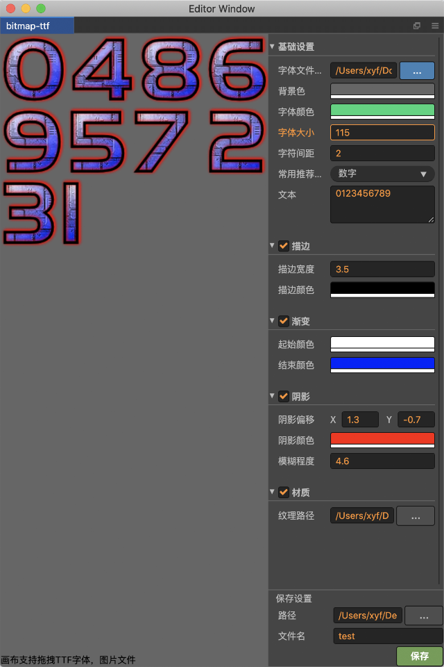

说明
游戏开发中经常会碰到制作BMFont字体的需求,市面上有很多专门的工具都在解决这个问题
- BMFont(交互挺糟心的！)
- Glyph Designer2（Mac+Win32）
- bmGlyph（Mac 68元，每天穷醒的路过）
- ShoeBox
- Littera
插件特色
参考了大量的市面主流同类型软件，结合cocos creator进行了深度定制，包含了小王子的满满诚意！
支持使用字符图片生成font位图文件，使用更简单，so easy! 点击跳转到使用文档

支持使用ttf字体文件生成font位图文件，重点支持了对字体进行描边、阴影、模糊、纹理等功能，别人有的咱也不能落下！点击跳转到使用文档 
常见问题
为什么我生成的bmfont文件不能使用？
bmfont其实是一个标准，需要2个文件配合使用：.fnt、.png，这两个文件一并导入到项目中即可使用，需要注意的是2个文件必须在同一个目录下！ 请使用插件自己生成的2个文件，不要使用任何其他来源的文件，因为不确保其他来源的文件有效
其他
如果使用过程中遇到任何问题,欢迎联系QQ群224756137
后续开发计划
- 集成免费的ttf字体
- Custom Image
- Char单独设置offset和xadvance